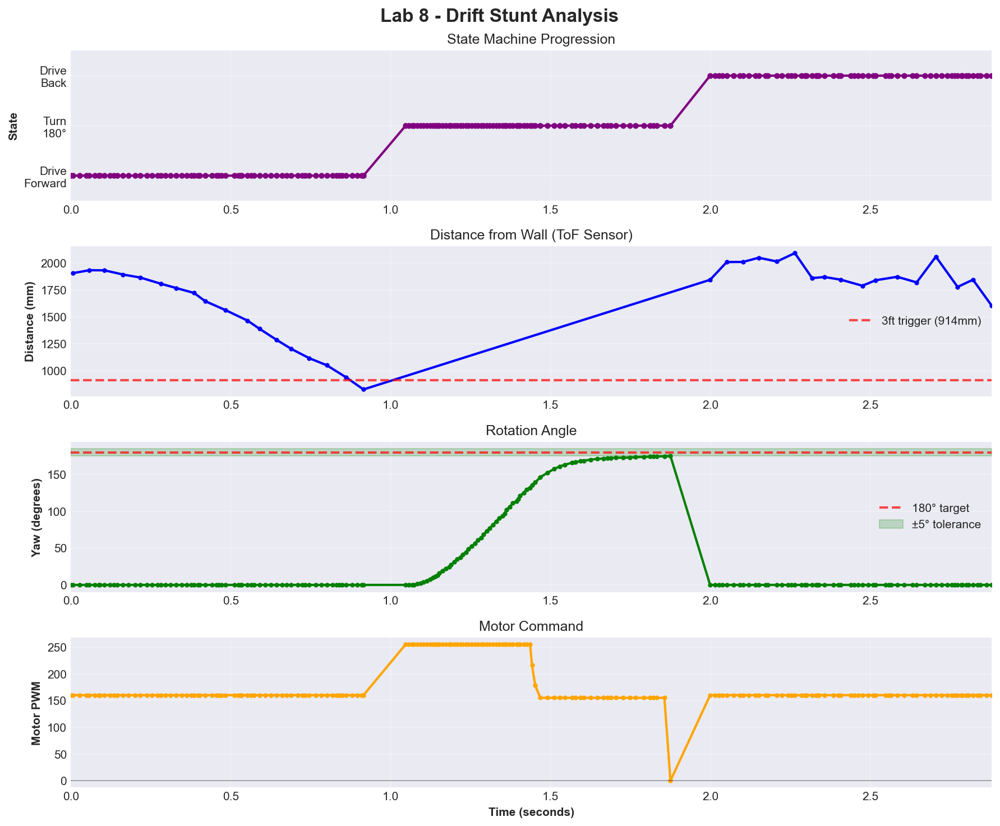
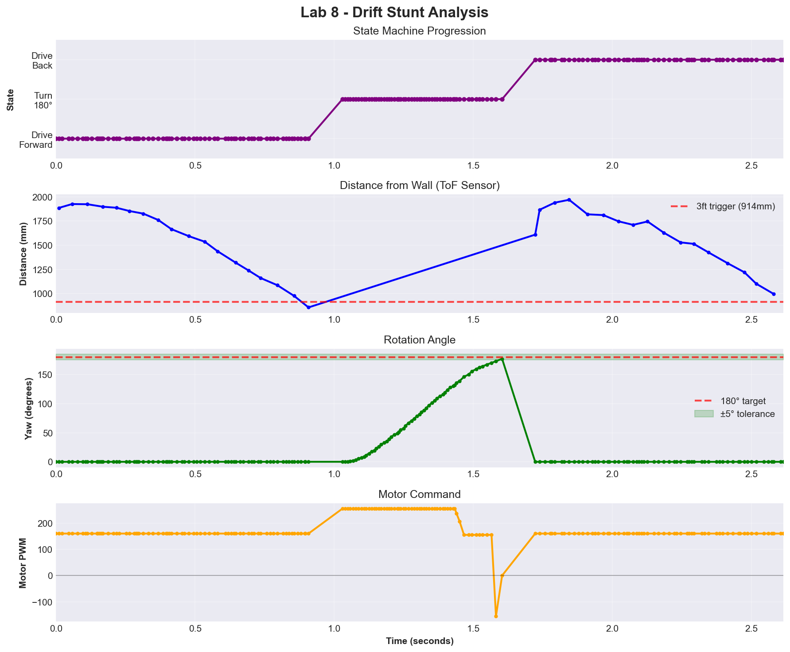
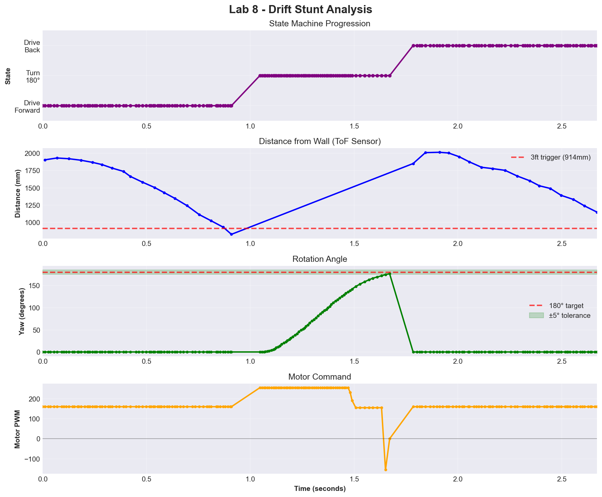

Introduction
The drift stunt requires driving forward, turning 180° at 3ft from the wall, and returning to start. This integrates Labs 5-6 PID controllers into a wireless state machine.
System Design
State Machine
A four-state machine controls the stunt, with automatic transitions based on sensor data:
enum StuntState {
STUNT_IDLE = 0,
STUNT_DRIVE_FORWARD = 1,
STUNT_TURN_180 = 2,
STUNT_DRIVE_BACK = 3,
STUNT_DONE = 4
};File Structure & BLE Interface
Modular design with two BLE commands:
| Command | ID | Description |
|---|---|---|
STUNT_DRIFT | 22 | Initiates drift stunt |
GET_STUNT_LOG | 23 | Retrieves sensor data |
Critical fix: stunt_end_index marks data boundary, preventing post-stunt garbage from corrupting plots.
Implementation
State 1: Drive Forward
Robot drives at 170 PWM, monitoring front ToF. At 914mm (3ft), brakes and transitions to turn:
case STUNT_DRIVE_FORWARD:
driveForward(STUNT_DRIVE_SPEED);
readToF(index);
if (tof1_array[index] <= STUNT_TRIGGER_DIST) {
brakeMotors();
resetYaw();
stunt_state = STUNT_TURN_180;
}
break;State 2: Turn 180°
Reuses Lab 6 orientation PID. Gyroscope tracks yaw, PD controller drives until 180° ± 5°:
case STUNT_TURN_180:
readIMU(index);
float error = STUNT_TURN_SETPOINT - yaw_g;
float p_term = STUNT_KP_ORIENT * error;
float d_term = STUNT_KD_ORIENT * (error - prev_error);
if (abs(error) < 5.0) {
brakeMotors();
stunt_state = STUNT_DRIVE_BACK;
} else {
turnOnAxis((int)(p_term + d_term));
}
break;Gains (Kp=8.5, Kd=0.52) adapted from Lab 6, adjusted for battery, speed, and carpet friction.
State 3: Drive Back
Time-based return: drives forward (facing 180°) for 900ms to reach start:
case STUNT_DRIVE_BACK:
if (millis() - drive_back_start_time >= STUNT_DRIVE_BACK_TIME) {
brakeMotors();
stunt_end_index = index; // Freeze data boundary
stunt_state = STUNT_DONE;
} else {
driveForward(STUNT_DRIVE_BACK_SPEED);
}
break;stunt_end_index prevents retrieval command from sending post-stunt garbage data.
Tuning and Parameters
Initial 200 PWM destroyed front ToF. Swapped side sensor, used 170 PWM—sufficient speed while preserving hardware. Lab 6 gains (Kp=8.5, Kd=0.52) adjusted for battery and carpet friction.
| Parameter | Value |
|---|---|
| Drive Speed | 170 PWM |
| Trigger | 914mm |
| Turn Tolerance | ±5° |
| Drive Back | 170 PWM, 900ms |
Results
Three successful runs demonstrated consistent stunt execution. All runs completed in ~2.5-3 seconds with clean state transitions:



Key observations across all runs:
- Drive Forward: ToF decreases from ~2000mm to trigger at 800-900mm
- Turn 180°: Yaw increases smoothly to 180° with minimal overshoot
- Drive Back: Robot maintains 180° orientation while returning
- Speed consistency: Despite 170 PWM command, actual speed appeared higher—likely due to fresh battery voltage and carpet surface reducing friction compared to lab floor
Plot Analysis
Distance (Blue): The ToF sensor reads distance to the nearest object in front. During approach, it measures decreasing wall distance. After the 180° turn, the sensor now faces away from the wall, so it reads increasing distance as the robot drives back. The noisy readings during return show the sensor detecting various room objects (furniture, walls) rather than the original target wall.
Yaw (Green): Smooth climb from 0° to 180° shows effective PD control. The angle holds at 180° during drive-back because the robot physically remains rotated. The drop to 0° at the end occurs when the main loop calls resetIMU() as normal mode resumes—this is expected behavior, not a bug.
Motor PWM (Yellow): Constant 170 during forward drive. During the turn, PID output can exceed 170—the controller calculates values up to 255 (full power) to achieve rapid rotation, visible as the spike. The brief drop to 0 between states represents the brakeMotors() transition command. Drive-back shows 170 again, with final 0 when the stunt completes.
resetIMU() call.Video Documentation
Three successful runs (portrait mode):
Challenges and Solutions
Hardware Damage: First run at 200 PWM destroyed front ToF. Swapped side sensor, reduced to 170 PWM.
Data Bug: array_index kept counting post-stunt, sending garbage data. Implemented stunt_end_index to freeze boundary:
// When stunt completes:
stunt_end_index = index;
// In GET_STUNT_LOG:
int count = stunt_end_index; // Not array_indexDebugging: Added BLE status messages for real-time visibility without Serial Monitor.
Conclusion
The drift stunt successfully integrated Labs 5 and 6 PID controllers into a coordinated maneuver. Modular state machine design enabled reuse of proven components with minimal modification. Key lessons: conservative speed selection preserves hardware, proper data boundaries prevent corrupted plots, and wireless debugging enables untethered operation.
Acknowledgements
Claude AI was used throughout this lab for assistance with state machine design, debugging the data collection index bug, implementing wireless debugging infrastructure, and structuring this lab report. All hardware assembly, testing, stunt execution, data collection, gain tuning, and video recording were done by me.